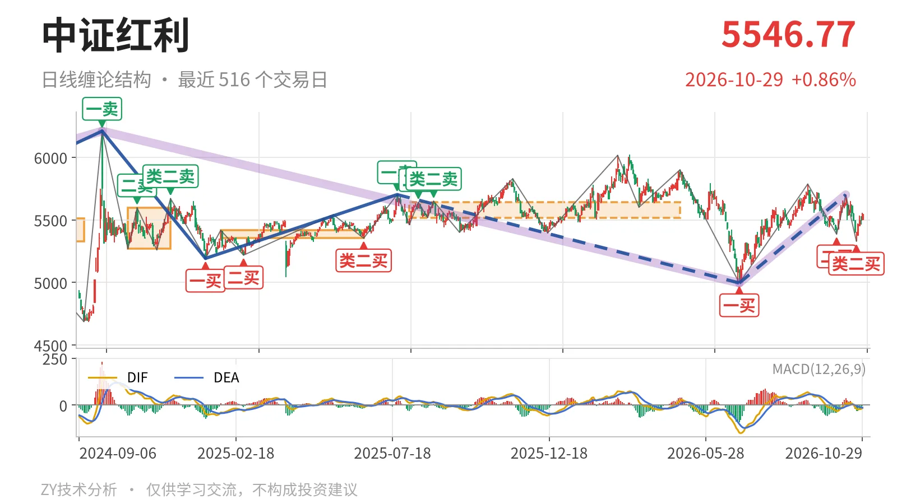
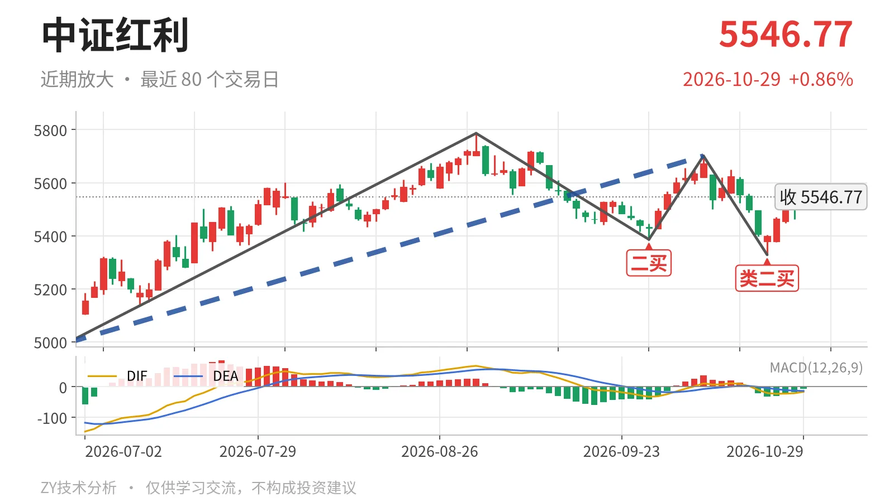

中证红利｜新低不新弱，5328点成类二买

最近日线中枢 5518.46—5639.99点，收盘位于中枢之内
一句话：日线中枢震荡，10月23日新低不新弱，类二买后反弹未成笔。
📈 走势结构：大级别重叠，日线回到中枢
中证红利当前不是单边下跌，而是日线中枢震荡。2025年1月13日至2025年7月23日的上涨线段已在2025年7月23日一卖5702.03点结束，之后转入2025年7月23日至2026年6月30日的下跌线段，这段还没结束；6月30日至10月14日的上涨线段也还在延续。两段反向日线线段重叠，价格没有走出连续线段破坏，回到震荡结构。10月14日反弹到5701.06点，距2025年7月23日一卖5702.03点仅差0.97点，随后转为回落；10月26日至29日的回落最低5375.84点，未跌破10月23日低点5328.30点。

🧭 中枢与位置：收在中枢内偏下沿
最新收盘5546.77点，位于2025年8月4日至2026年4月30日日线笔中枢5518.46—5639.99点内部，距下沿约28点，距上沿约93点。这个中枢还没完成，中轴5579.23点，现价在中轴下方，属于中枢内偏弱位置。10月14日冲高没有离开上沿形成中枢上移，回落也没跌破下沿，价格仍在延伸之中。
🎯 买卖点：类二买在5328点，受5702点一卖压制
6月30日一买4995.49点、9月29日二买5386.04点、10月23日类二买5328.30点，构成6月30日以来上涨段里的三个日线笔级买点。10月23日类二买出现在10月14日至23日下跌笔末端，之后反弹最高到5556.90点，但还没有形成一笔。由于10月14日高点5701.06点未超过2025年7月23日一卖5702.03点，当前反弹仍受该一卖结构压制。若后续跌破5328.30点，10月23日类二买只属于更小级别。

⚡ 背驰：新低不新弱
值得看的是9月1日至9月29日与10月14日至10月23日两段下跌笔。前一段绿柱面积561，DIF低点-32.7；后一段创5328.30点新低，但绿柱面积只有53，DIF低点-20.4。价格新低，面积和DIF都没同步走弱，构成“新低不新弱”的下跌背驰。10月23日类二买正是这段背驰后的结果。不过最新MACD的DIF仍在零轴下方，为-16.3，反弹力度还没得到日线笔确认。
🔎 关键位置：5328点与5640点定强弱
后面只看结构：若回落不破5328.30点，6月30日以来的上涨段就还在延续。若反抽站上5639.99点上方，价格才算回到中枢上半区，之后再看5702点一线。若跌破5328.30点，10月23日类二买只对应更小级别，下方参照4995.49点一买。当前结构暂判中性：强在下跌背驰后没破类二买，弱在反弹尚未成笔且DIF仍压在零轴下。
⚠️ 本文为基于公开行情数据的缠论技术结构记录，由程序自动计算并生成，仅供学习交流，不构成任何投资建议。市场有风险，投资需谨慎。